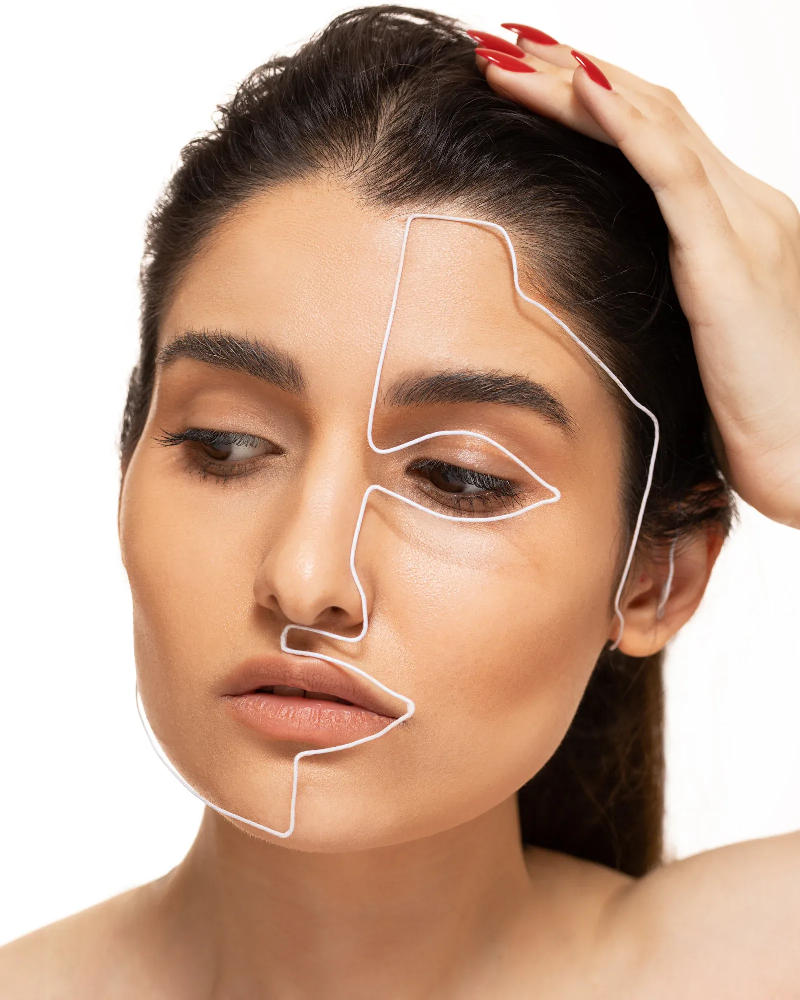
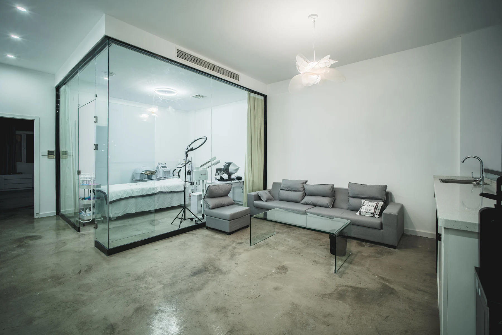

Für Ästhetikpraxen
Ärztliche Kompetenz,online sichtbar gemacht.
Ihre Patientinnen vertrauen Ihrer Erfahrung. Neue Patientinnen sollen diese Erfahrung schon online spüren: bei Google, bei ChatGPT und auf einer Website, die so ruhig und präzise wirkt wie Ihre Behandlungen.

Die Ausgangslage
Ausgezeichnete Bewertungen, aber online zu leise.
Viele Praxen haben hervorragende Bewertungen, ein starkes Instagram und zufriedene Stammpatientinnen. Trotzdem nennt ChatGPT andere Namen, und bei Google erscheint zuerst die Praxis mit dem vollständigeren Profil.
Dazu kommt: Werbung für ästhetische Medizin hat in der Schweiz klare Grenzen. Ich schreibe Ihre Inhalte mit Blick auf diese Regeln. Die fachliche Freigabe bleibt immer bei Ihnen.
Was Patientinnen sehen wollen
Ruhe, Kompetenz, Vertrauen.
Auf Ihrer Website zeigen wir, was Ihre Praxis ausmacht: Beratung, Räume, Team und Sorgfalt. Ohne Vorher-Nachher-Bilder, mit echten Momenten.


So wird gesucht
Wonach Patientinnen suchen
Beispiele für Suchanfragen, wie sie Menschen in der Region Zürich eingeben. Für genau diese Momente entstehen Ihre Seiten.
Was ich für Sie tue
Alles, was es für mehr Termine braucht.
- Eine Seite pro BehandlungMit Ablauf, Dauer, Ausfallzeit, häufigen Fragen und Termin-Knopf.
- Online-Termin mit OneDocIhr bestehendes Buchungssystem wird sauber eingebunden.
- Ärztinnen und Team sichtbarQualifikationen, Schwerpunkte und Porträts schaffen Vertrauen.
- Google-Profil komplettAlle Behandlungen, Fotos, Öffnungszeiten und regelmässige Beiträge.
- Bewertungs-SystemIhr Team bittet nach jedem Termin um eine ehrliche Bewertung.
- Sichtbarkeit in ChatGPTKlare Fakten zu Praxis, Team und Behandlungen, monatlich getestet.
- Deutsch und EnglischFür internationale Patientinnen auf Wunsch zweisprachig.
- MonatsberichtAnfragen, Anrufe, Bewertungen, Positionen und ChatGPT-Test.
Werberegeln
Sichtbar werden, ohne die Regeln zu verletzen.
Für verschreibungspflichtige Arzneimittel gilt in der Schweiz ein Publikumswerbeverbot. Das betrifft auch beliebte ästhetische Behandlungen. Darum gilt bei mir:
Behandlungen werden beschrieben, Markennamen von Präparaten nicht beworben.
Stattdessen Räume, Team, Ablauf und ehrliche Information.
Auch nicht in Erinnerungen an Patientinnen. Jede Seite geht vor der Veröffentlichung zur Freigabe an Sie.
Das ersetzt keine Rechtsberatung. Bei Unsicherheiten empfehle ich, die Inhalte zusätzlich prüfen zu lassen.
Häufige Fragen
Was Praxen mich fragen.
Dürfen Sie für unsere Behandlungen werben?
Arbeiten Sie mit OneDoc?
Wie gehen Sie mit Bewertungen um, Stichwort Berufsgeheimnis?
Wie viel Zeit braucht das von uns?
Gratis Sichtbarkeits-Check
Wie sichtbar ist Ihre Praxis heute?
Ich prüfe Ihre Website, Ihr Google-Profil und Ihre Sichtbarkeit in ChatGPT und zeige Ihnen persönlich, wo neue Anfragen verloren gehen. Ob neue Website oder gezielte Verbesserungen: kostenlos und unverbindlich.

James Alves Da SilvaIch prüfe Ihre Praxis persönlich und melde mich direkt bei Ihnen.